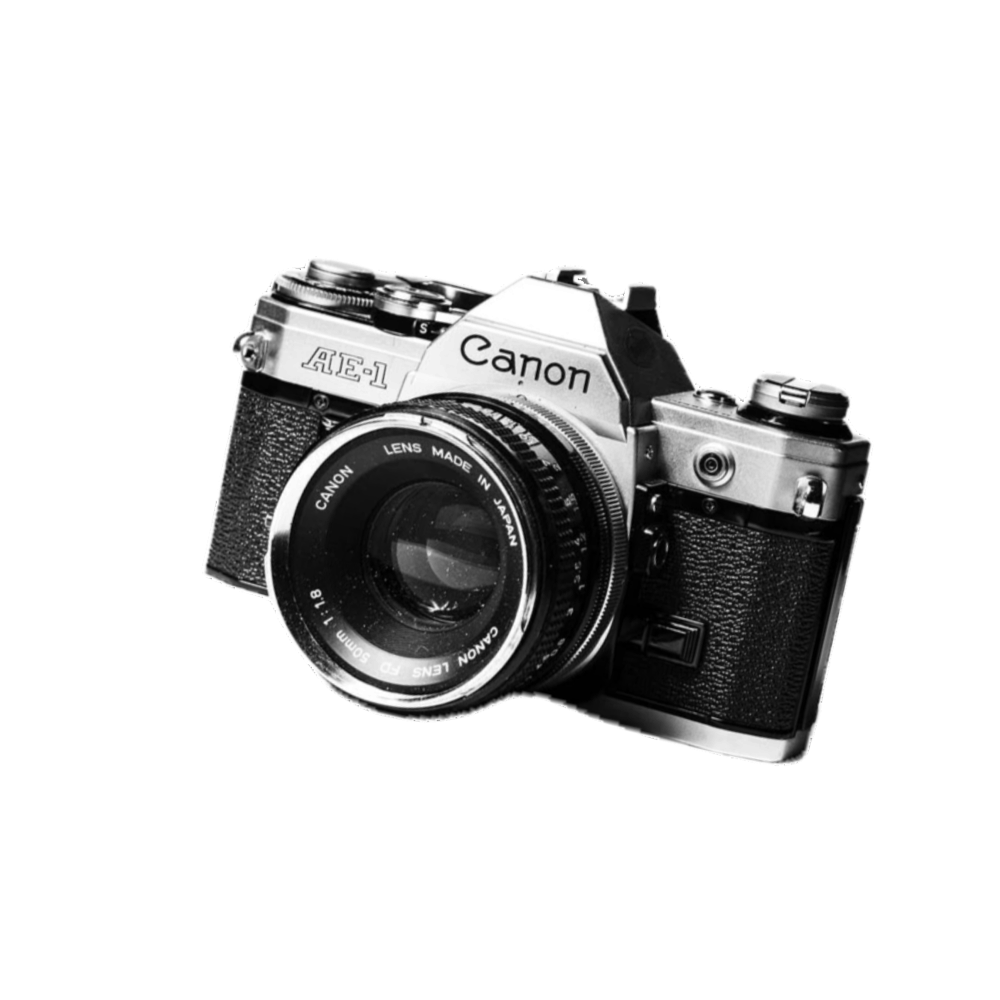
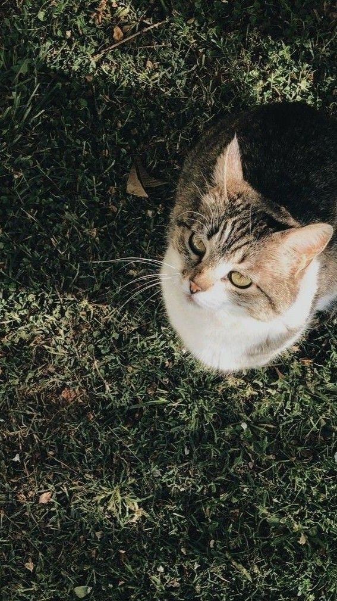
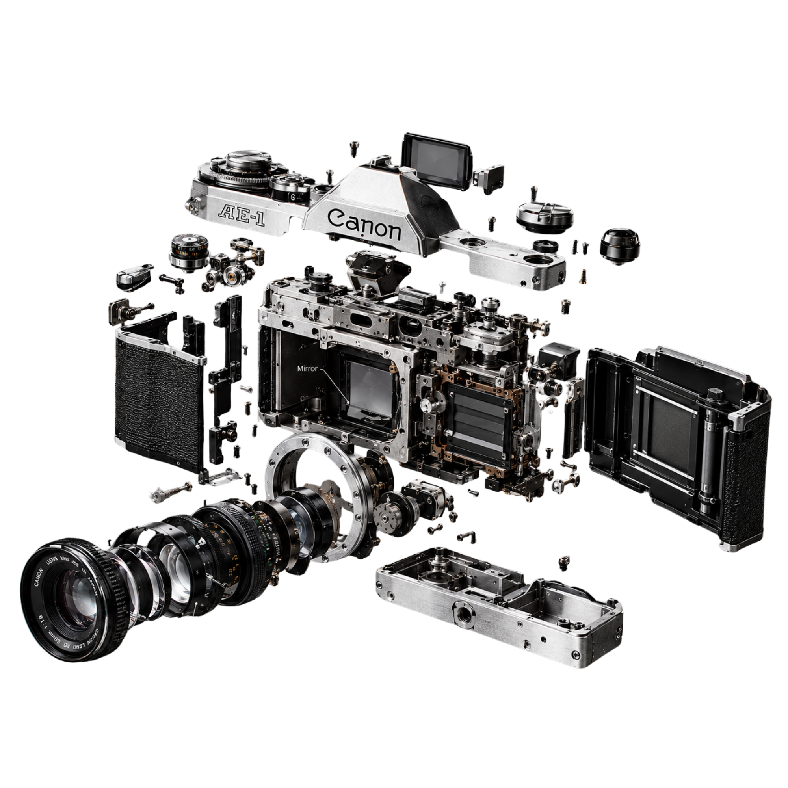

FD Mount
Interchangeable optics, locked by feel
Canon's breech-lock FD mount grips the full range of FD and New FD lenses. A turn of the collar, a positive click, and the light is yours.
35mm SLR Introduced 1976
The Canon AE-1 put electronically controlled shutter-priority automation into the hands of a generation. Silver and black, breech-lock FD mount, cloth focal-plane shutter. An instrument designed to disappear so the picture can appear.

Five decisions define the instrument. Every one of them is about the photograph, not the camera.
FD Mount
Canon's breech-lock FD mount grips the full range of FD and New FD lenses. A turn of the collar, a positive click, and the light is yours.
Weight
590g
Body only. Light enough to carry all day, dense enough to feel deliberate in the hand.

Shutter
1/1000s
Top speed, four-axis cloth focal plane, electronic timing.
Exposure
AE
Shutter-priority automation, or full manual control, your call.
Origin

1976
Built in Japan, changed what an amateur camera could be.
It is mechanical, optical, and entirely present.
The craft
The AE-1 was not decorated. It was resolved. Keep scrolling and the details hold their position while the work moves past them.
Inside the body
The AE-1 holds its mechanism with intention: optics at the front, shutter at the heart, electronics timed to the millisecond. Taken apart, it still reads as one idea.

Drag to rotate · Hover to identify
Body
590g
Finder
0.86x
Meter
EV 1–18
Six elements in four groups, carried on the barrel up front. The optics and the focus and aperture rings travel as one unit.
A turning collar locks the lens without rotating the optics. Positive, repeatable, wear-free at the mating surfaces.
The die-cast shell that carries the mirror box, film chamber and the focal-plane shutter at its heart.
A fixed eye-level finder at 0.86x, with split-image focusing at its center.
The deck that seats the shutter-speed dial and counter, and forms the slope the prism rises from.
The hinged back with its pressure plate and memo holder, sealing the film chamber against light.
Folds flat to the top plate, lifts to release the spool, and winds the exposed roll back in one motion.
One 120-degree throw of the lever cocks the shutter and advances the frame, readying the next exposure.
The mechanics
The AE-1 relies on electronics rather than pure mechanics, a four-axis horizontal cloth shutter timed by current, not springs. Shutter speeds from two seconds to a thousandth, X-sync at a sixtieth. Precision you can hear.
35 mm (135)
24 x 36 mm
Canon FD (breech-lock)
Four-axis horizontal-travel cloth focal plane
2 s to 1/1000 s plus Bulb
1/60 s
Shutter-priority AE, manual
TTL center-weighted, EV 1-18 at ISO 100
ISO 25 to 3200
Fixed eye-level pentaprism, 0.86x
141 x 87 x 47.5 mm
590 g (body only)
Specifications verified against the Canon Camera Museum archive.
The AE-1 is a 35 mm film camera. It asks for a roll, a little patience, and your attention in return.
Purchase link not yet configured